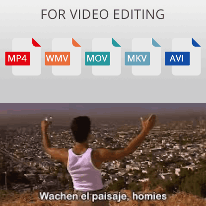

We have heard about this software and that is very useful for everyone who is starting in the content creator field, but what is really Adobe Premiere?

Premiere Pro is an editing software design for video editing, very used in the content creator field but not only in there, but also in movies and tv shows.
But even if it is used in the entertainment industry you can learn how to used it (you can find this information on the internet or in my page).
This software editing works perfectly to almost any type of format video, such as MP4 which is the most common, but also with MOV, FLV, AVI between other video formats.
Also like other adobe products you can use them at the same time in the same project like Premiere Pro and After Effects. Giving more creativity and options to your proyect.
Now that you have a better idea of what is Premiere Pro, you can check other options cause this application is very expensive, other options that are less expensive could be Filmora 11, and that it is easier to learn, other option could be DaVinci Resolve, but that is harder to learn, even harder than Premiere Pro itself.